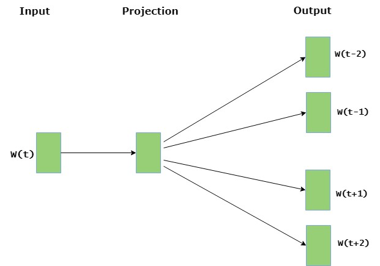

Word2Vector
Frank Coelho de Alcantara -2020
Vetorização
Algoritmo de aprendizagem supervisionada para a vetorização criado em 2013.
Mikolov, Tomas; et al. (2013). "Efficient Estimation of Word Representations in Vector Space". arXiv:1301.3781.
Mikolov, Tomas (2013). "Distributed representations of words and phrases and their compositionality". Advances in Neural Information Processing Systems. arXiv:1310.4546.
O objetivo é criar vetores menos esparsos e mais uteis para descobrir a relação entre termos em documentos.
Matriz Esparsa
Já vimos que a vetorização cria matrizes que relacionam termos e documentos de uma forma esparsa.
Ainda que exista informação nesta representação, perdemos semântica e criamos grandes matrizes cheias de zeros.
Por outro lado, criamos vetores que representam documentos em um espaço multidimensional onde cada termo é uma dimensão.
Podemos ver a relação entre os vetores de cada documento usando a distância entre eles.
Dois documentos exatamente iguais terão o mesmo comprimento e o ângulo entre eles será zero. O ângulo é importante. Muito importante.
Cossine Similarity
Métrica utilizada para determinar o grau de similaridade entre dois documentos independente dos seus tamanhos.
Mediremos o cosseno do ângulo entre dois vetores em um espaço multidimensional.
No nosso caso, dois vetores são estruturas de dados contendo informações sobre os dois documentos.
Cada termo corresponde a uma dimensão e a quantidade destes termos indica o escalar da dimensão. E podemos determinar a orientação do vetor que representa o texto.
Usando o cosseno entre os ângulos podemos criar uma medida de similaridade entre os vetores criados independente do comprimento destes vetores.
Cossine Similarity - Matemática
A Similaridade entre dois vetores, $A$ e $B$ será dada por: $$cos(\theta) = \frac{A\cdot B}{|A||B|} $$
Ou, considerando as múltiplas dimensões teremos: $$cos(\theta)= \frac{\sum_{i=1}^{n}A_i B_i}{\sqrt{\sum_{i=1}^{n}A_i} \sqrt{\sum_{i=1}^{n}A_i}}$$
O qué bastante simples usando o Numpy $$cos\_sim = np.dot(a, b)/(np.linalg.norm(a)*np.linalg.norm(b))$$
Word2Vector - CBOW
Word2Vector usa dois algoritmos para a criação do vetor: CBOW e SKIP-GRAM
CBOW Common Bag Of Words: considera o contexto de um determinado termo e tenta inferir que termo é este.
Funciona com a determinação de uma janela, um conjunto de palavras e dentro desta janela, centraliza a palavra desejada.
Trata-se de um algoritmo de aprendizagem supervisionada consistindo de uma rede neural com três camadas com apenas uma camada oculta.
Você pode ver uma implementação deste algoritmo em python, usando o Keras aqui!

Word2Vector - SKIP-GRAM
SKIP-GRAM: partindo de um termo determinado o Skip-Gram tenta determinar os termos que rodeiam este termo.
Funciona com a determinação de uma janela, e vai criar os termos que estão dentro desta janela em torno do termo chave. É o processo inverso ao CBOW
Trata-se de um algoritmo de aprendizagem supervisionada consistindo de uma rede neural com três camadas com apenas uma camada oculta.
Você pode ver uma implementação deste algoritmo em python aqui!
Word2Vector - Completo
o Word2Vector usa estes dois algoritmos com a intensão de criar um vetor a partir de um determinado corpus.
Tanto o CBOW quanto o SKIP-GRAM são usados apenas para descobrir as informações que criarão um vetor mais próximo de algum sentido semântico.
A dimensão do vetor é o número de features que temos na saída.
Esta imagem está disponível aqui!

Exercício 1
Seu trabalho será, usando o Google Colab, determinar a similaridade, usando Cossine Similarity entre todos os documentos formados por um corpus de dois arquivos científicos, quaisquer, com mais de 15 páginas em PDF, escritos em inglês e convertidos para txt com a ferramenta que você desejar.
O resultado deve ser uma matriz relacionando estes parágrafos e a sua similaridade.
Este trabalho vale a presença para as aulas de 11 de novembro e 18 de novembro.
Exercício 2
Seu trabalho será, usando o Google Colab, fazer uma implementação, from scratch do CBOW.
O resultado deve ser uma rede neural que, dado um conjunto de 4 palavras indique a palavra mais provável de estar exatamente no meio. Treine seu algoritmo com os textos do Machado de Assis disponíveis na NLTK
Este trabalho vale a presença para as aulas de 11 de novembro e 18 de novembro.
Exercício 2
Seu trabalho será, usando o Google Colab, fazer uma implementação, from scratch do SKIP-GRAM.
O resultado deve ser uma rede neural que, dado um termo indique as quatro palavras mais prováveis de estar circundando este termo. Treine seu algoritmo com os textos do Machado de Assis disponíveis na NLTK
Este trabalho vale a presença para as aulas de 11 de novembro e 18 de novembro.